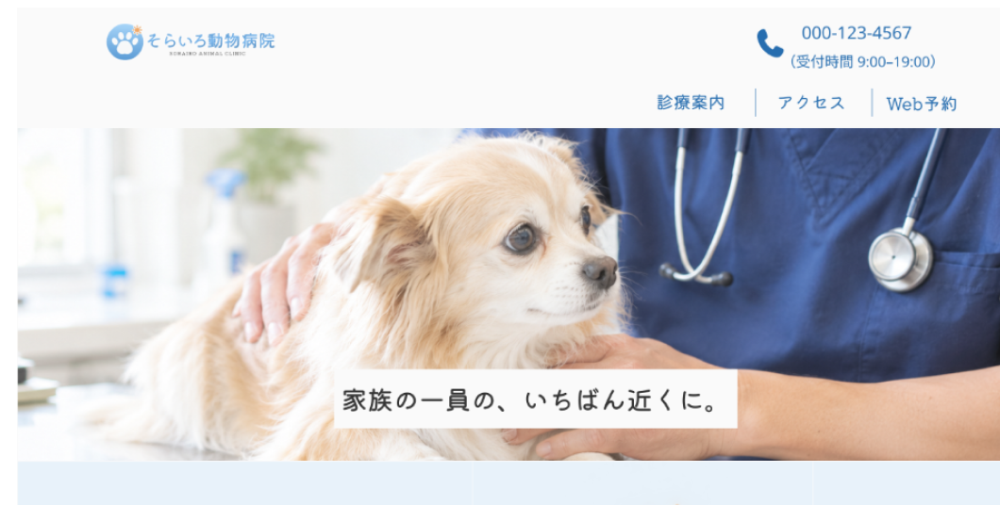
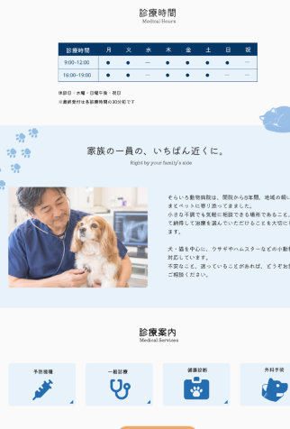
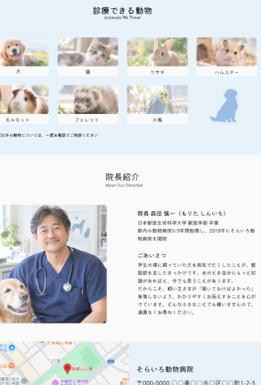
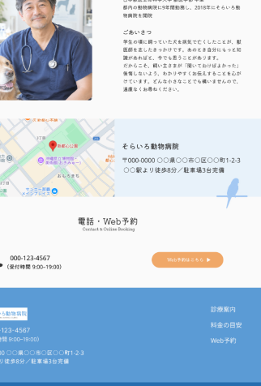
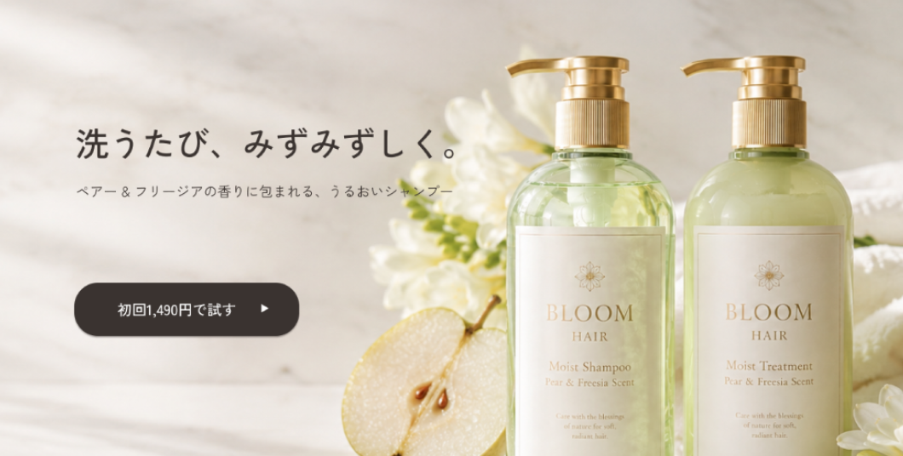
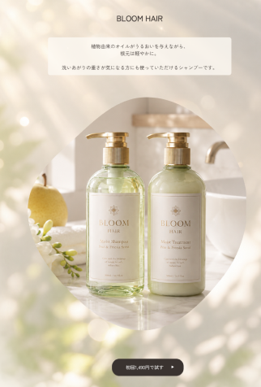
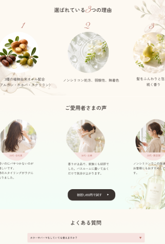
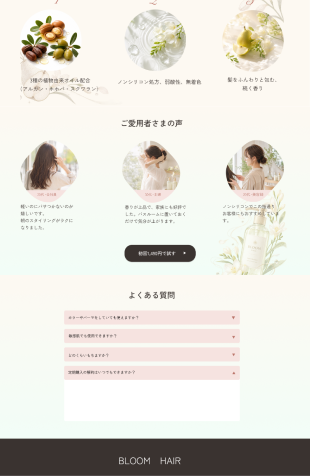

WEB DESIGN
架空のWebサイト「そらいろ動物病院」と、架空のLPページ「BLOOM HAIR モイストシャンプー」を制作しました。
PC・スマートフォン対応（768pxで切り替え）
使用ツール
Figma / VSCode / ChatGPT（人物・動物画像生成）/ Claude（依頼書作成）
01そらいろ動物病院
架空の動物病院「そらいろ動物病院」のWebサイト。
- TOPページ
- 診療案内ページ
- Web予約ページ




※イメージ画像
制作期間：１ヵ月
ターゲットと目的
動物を飼っている２０代～６０代
対応可能な動物の種類と診療内容を確認し、電話や
予約ページから予約し、来院してもらう事が目的
デザインの意図
信頼感が出るように青（#5B9BD5）を使い、Web予約のボタンは目立つよう青の補色のオレンジ（#F0A868）を使用。書体は「Kiwi
Maru」丸みのあるフォントで親しみやすさも出しました。
日付や電話番号、住所などの数字は、「Kiwi Maru」だとデザイン的なので、「Noto Sans」にし可読性を確保。信頼感と親しみやすさ、情報の分かりやすさを意識して作成しました。
工夫した点
TOPページ：ファーストビューでは診療を受ける犬・猫や外観の画像を「@keyframes fade」で画像が切り替わるようにし、ファーストビューで動物病院のイメージを掴めるように。
診療案内ページ：各種の診療がわかりやすいように
写真やアイコンを配置しました。
Web予約ページ：入力必須な項目はオレンジにし目立つようにしました。「textarea」には、「placeholder」をつけ、どんな内容を入力すればいいかサポートしています。
02 BLOOM HAIR モイストシャンプー
架空のシャンプー「BLOOM HAIR モイストシャンプー」（ペアー & フリージアの香り）のランディングページ。
figmaデータはこちら



※イメージ画像
制作期間：１ヵ月
ターゲットと目的
20〜30代の女性。お試し価格を訴求し、ボタンから購入へ繋げること。
デザインの意図
ペアーとフリージアの香りに合わせ、クリーム色 （#FDF9F2） をベースに、淡いグリーン #C9D8C5、
アクセントとして淡いピンク #F6E3E0 を使用。文字色は真っ黒ではなく #3A3330 を選び、重くなりすぎない印象にしました。
書体は 「Zen Kaku Gothic New」可読性を保ちながら洗練された印象を出せるよう選定しています。
余白を広めに取り、価格に見合う上質さを表現しました。
工夫した点
「ご愛用者さまの声」セクションにて、スマートフォンでは視線を左右に振るため、画像とテキストを交互に配置しています（2番目のみテキストが先）。PCでは3列カード型に切り替わりますが、HTMLの順序のままでは2番目だけ画像とテキストの位置が逆になってしまいます。そこでflex-direction:
column-reverseで該当箇所のみ縦順を反転させ、3列すべてで画像が上に揃うようにしました。HTMLを変更せずCSSだけで解決することで、スマートフォンでの意図した並びを保っています。